Mediated (Dis)plays
The Future of ‘Text’ after Web 2.0
02Room 02 — Stage & Page

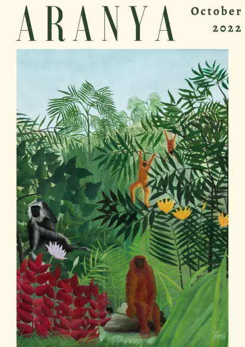
Fig. 1 — Me, and a very large trophy
Three years of English literature at Jesus and Mary College, University of Delhi. I spent as many hours in conference halls, magazine layouts and backstage as I did in lectures.
A play in four acts,
with a prologue
Tonight’s programme
Jesus and Mary College, 2021 – 2024
Prologue · Education · 2017 – 2024
Every play needs a setting. Mine was a BA (Hons) in English with a minor in Political Science. Before that, Humanities at Navy Children School, New Delhi, with Mathematics and Economics for company.
2017 – 19 · Navy Children School, New Delhi
87.6%
Class X (AISSE)
2019 – 21 · Navy Children School, New Delhi
86.8%
Class XII (AISSCE). Humanities, with Mathematics and Economics
2021 – 24 · Jesus and Mary College, University of Delhi
7.2CGPA
BA (Hons) English, minor in Political Science. First Division.
On the reading list
Act I · English Literary Association · 2022 – 24
At the English Literary Association I learned that a seminar is a production. It needs a theme, a script, a cast and somebody holding the call sheet.
I joined the Research & Content Team in 2022 and led it the year after. We spearheaded fests and seminars on themes like food literature and children’s literature.
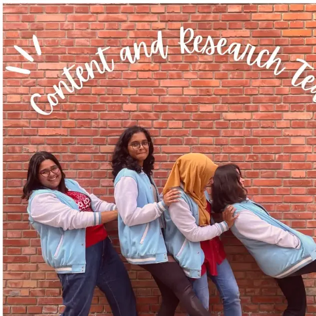
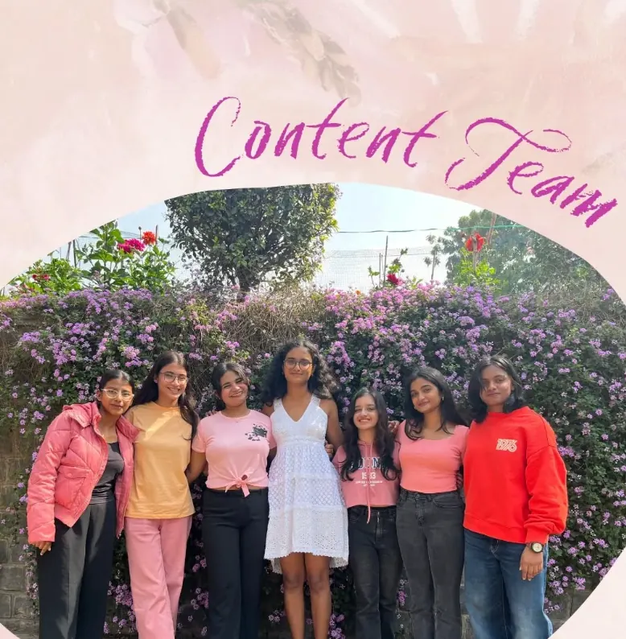
Fig. 2 — The Research & Content Team
I also organised two student conferences. Both had brackets in their titles, which tells you most of what you need to know about English departments.
Hover the bracketsTap a title to close the brackets
The Future of ‘Text’ after Web 2.0
Identity, Experience, Agency, and Representation
My paper · National Student Seminar 2022
Omori is a 2020 indie psychological horror RPG by OMOCAT. Its story has five different endings, and the player’s actions decide which one you reach. That makes the player part reader, part author. My paper explored gaming as an emerging medium for literary consumption, and how we might learn to read it.
One story · five endings · you hold the pen
Act II · Green Society · 2021 – 23
In 2022 I became editor-in-chief of Aranya, the Green Society’s monthly e-magazine. Every edition went out under a painted cover, and every page had to earn its place.
7The team I led
5Editions curated
& designed
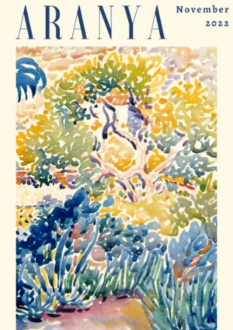
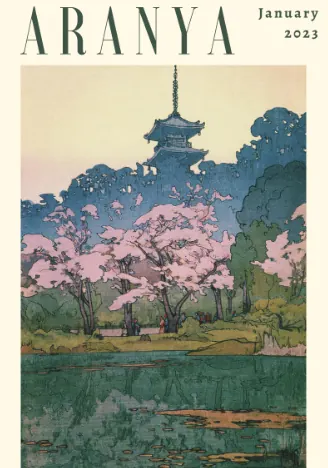
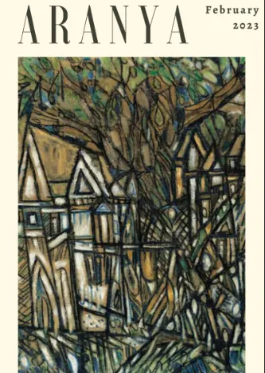
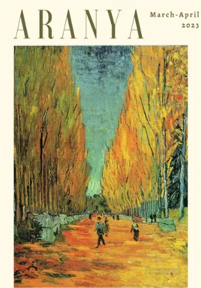
Hover to lift a cover · click to openTap a cover to open it
Inside every issue
Previously · 2021 – 22
The year before the masthead, I was a core member of the Content Team: writing user-generated articles and growing the society’s Instagram reach. Good editors start as writers who were edited.
Act III · ShakeSoc · 2023 – 24
Theatre taught me the thing every other medium borrows from it: timing. Two years at the Shakespeare Society of India’s National Drama Competition. Two productions, two prizes.
In 2024 I designed the lights for Macbeth. So in this room, you hold the spotlight. Move your cursor.In 2024 I designed the lights for Macbeth. Here the spotlight drifts on its own. Follow it.
Scene i · 2023
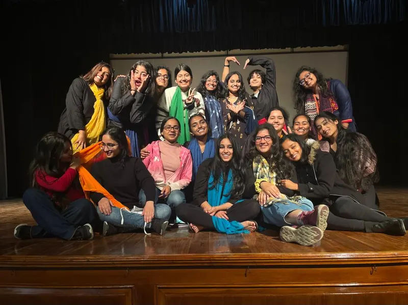
A Hindi adaptation of The Merchant of Venice. I was part of the ensemble cast, which is theatre’s way of saying everyone matters and nobody gets to hide.
3rd prize (2nd runner-up)3 February 2023 · Zakir Husain Delhi College
Scene ii · 2024
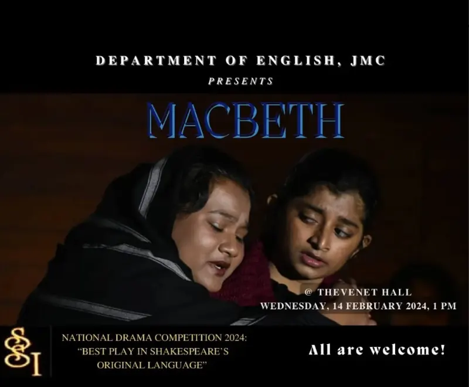
A year later I moved behind the scenes. I was Assistant Director, and I took charge of the parts of a play you feel before you notice them.
Best Production in Elizabethan English10 February 2024 · SP Jain Auditorium, South Campus, University of Delhi
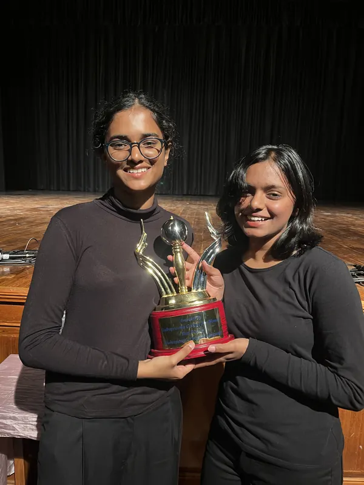
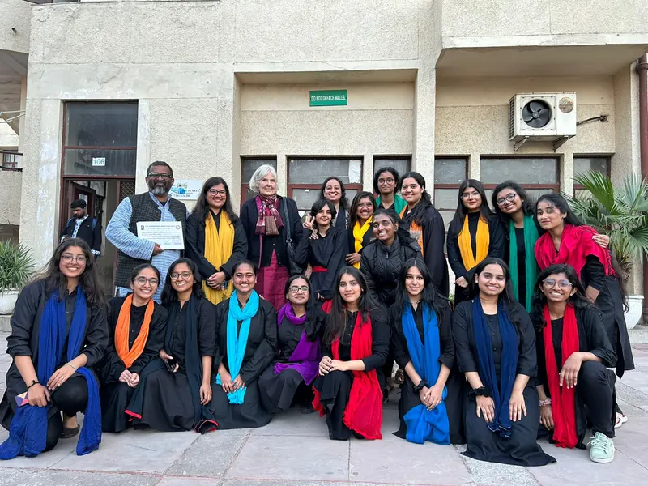
This ability to dedicate herself to a cause is what I will remember as her defining feature.
Act IV · LitScroll · 2021 – 24
LitScroll is the English department’s magazine, and the one thread that ran through all three years.
From the archive · two essays
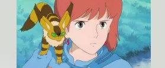
Epilogue · The reviews
Ms. Kurian is an extremely bright and dedicated student. Apart from all else, she has an endearing personality and is a good team player.
“I would rate her academically among the top ten percentile of her annual batch.”
Exeunt.
End of Room 02 · the house lights come up